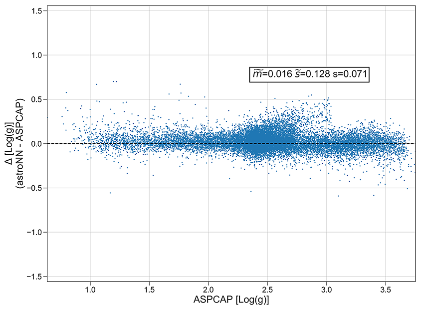
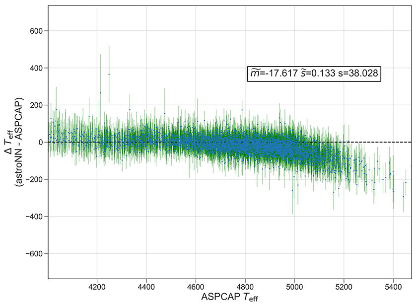
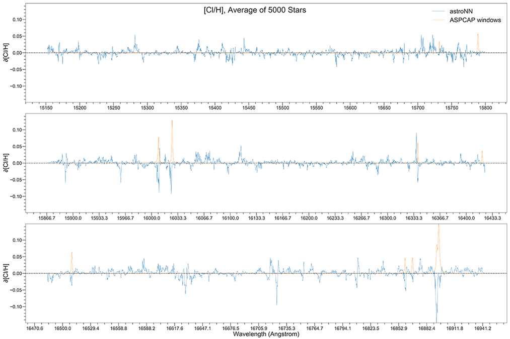

Bayesian Convolutional Neural Network¶
astroNN.models.BCNN is a 4 layered convolutional neural net (2 convolutional layers and 2 dense layers) with dropout and l2 regularizers in every layers.
You can create Bayesian CNN in astroNN using
from astroNN.models import BCNN
# And then create an object of Convolutional Neural Network classs
bcnn_net = BCNN()
APOGEE Spectra Analysis¶
Althought in theory you can feed any 1D data to astroNN neural networks. This tutorial will only focus on spectra analysis.
from astroNN.models import BCNN
from astroNN.datasets import H5Loader
# Load the train data from dataset first, x_train is spectra and y_train will be ASPCAP labels
loader = H5Loader('datasets.h5')
x_train, y_train = loader.load()
# And then create an object of Bayesian Convolutional Neural Network classs
bcnn_net = BNN()
# You dont have to specify the task because its 'regression' by default. But if you are doing classification. you can set task='classification'
bcnn_net.task = 'regression'
# Set max_epochs to 10 for a quick result. You should train more epochs normally, especially with dropout
bcnn_net.max_epochs = 10
bcnn_net.train(x_train, y_train)
Note
You can disable astroNN data normalization via bcnn_net.data_normalization=False and do normalization yourself. But make sure you dont normalize labels with -9999 (missing labels).
After the training, you can use 'bcnn_net' in this case and call test method to test the neural network on test data. Or you can load the folder by
from astroNN.models import load_folder
bcnn_net = load_folder('astroNN_0101_run001')
# Load the test data from dataset, x_test is spectra and y_test will be ASPCAP labels
loader2 = H5Loader('datasets.h5')
loader2.load_combined = False
x_test, y_test = loader2.load()
pred, pred_var = bcnn_net.test(x_test) # pred contains denormalized result aka. ASPCAP labels prediction in this case
Since astroNN.models.BCNN uses Bayesian deep learning which provides uncertainty analysis features. If you want quick testing/prototyping, please use astroNN.models.CNN. You can plot aspcap label residue by
bcnn_net.aspcap_residue_plot(pred, y_test, pred_var)
You can calculate jacobian which represents the output derivative to the input and see where those output is sensitive to in inputs.
bcnn_net.jacobian(x_test)
Example Plots using aspcap_residue_plot¶
 Example Plots using jacobian¶
